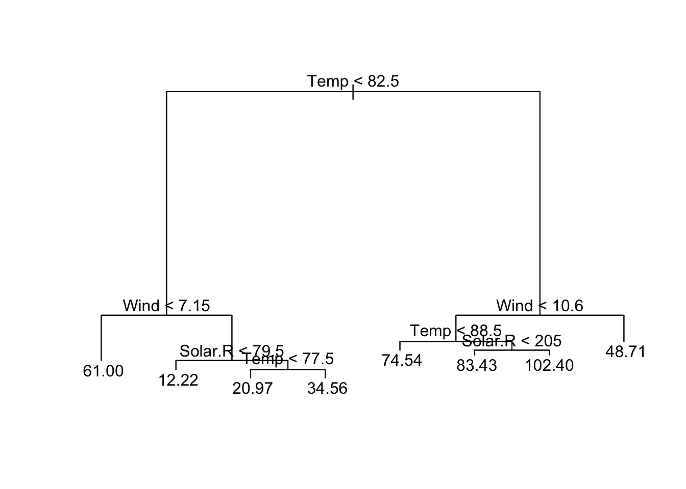
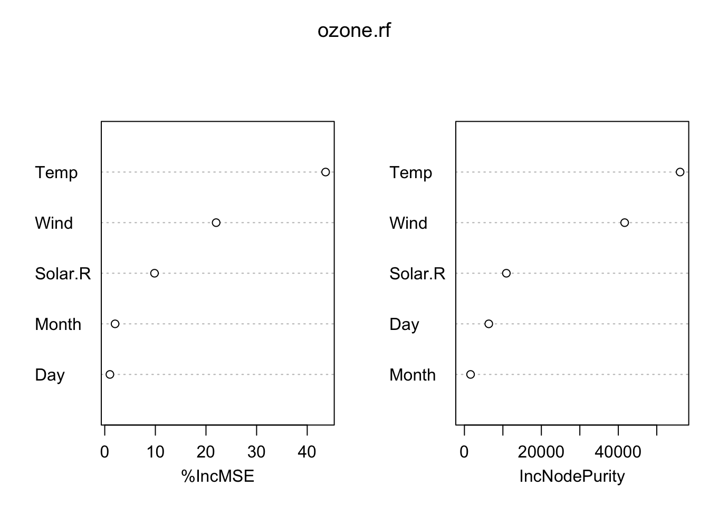
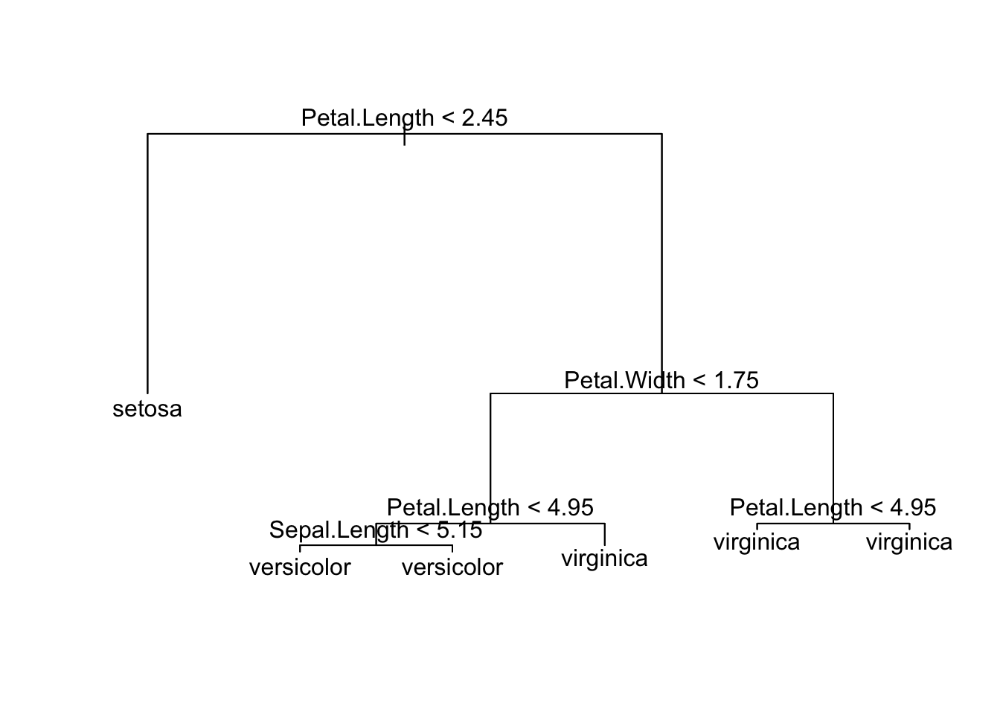
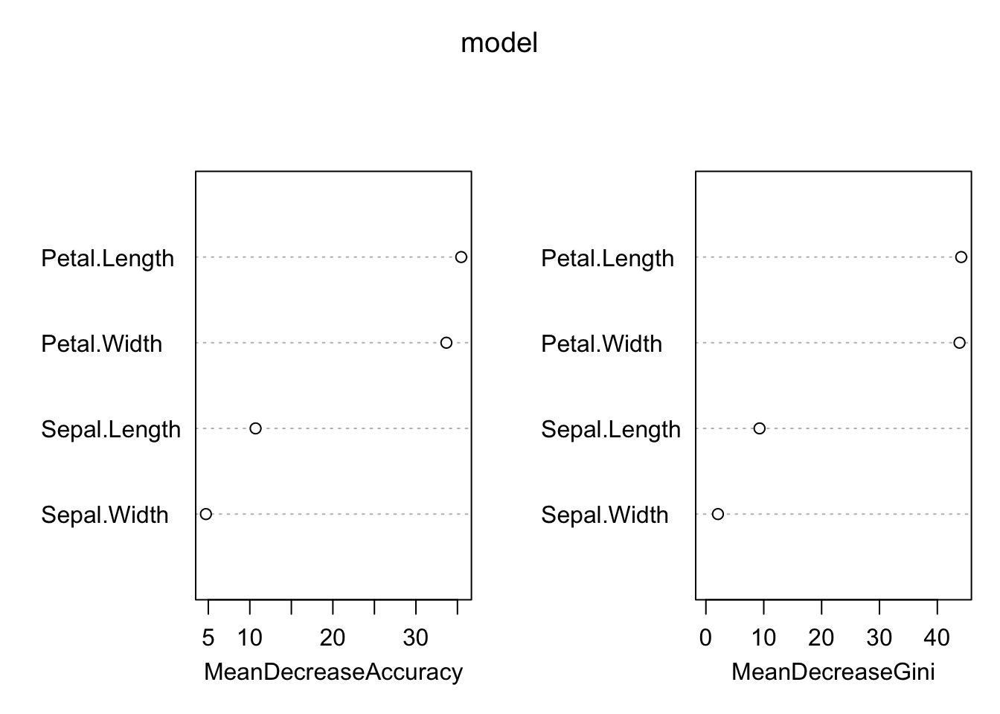

# Machine Learning --------------------------------------------------------
library(tree)
library(randomForest)
## randomForest 4.7-1.1
## Type rfNews() to see new features/changes/bug fixes.
#library(forestFloor)
# 1. Regression with random forest:------------------------
# We want to compare performance (%variability explained by the model) of lm
# with performance of randomforest
ozone.lm <- lm(Ozone ~ ., data=airquality, na.action=na.omit)
summary(ozone.lm)
##
## Call:
## lm(formula = Ozone ~ ., data = airquality, na.action = na.omit)
##
## Residuals:
## Min 1Q Median 3Q Max
## -37.014 -12.284 -3.302 8.454 95.348
##
## Coefficients:
## Estimate Std. Error t value Pr(>|t|)
## (Intercept) -64.11632 23.48249 -2.730 0.00742 **
## Solar.R 0.05027 0.02342 2.147 0.03411 *
## Wind -3.31844 0.64451 -5.149 1.23e-06 ***
## Temp 1.89579 0.27389 6.922 3.66e-10 ***
## Month -3.03996 1.51346 -2.009 0.04714 *
## Day 0.27388 0.22967 1.192 0.23576
## ---
## Signif. codes: 0 '***' 0.001 '**' 0.01 '*' 0.05 '.' 0.1 ' ' 1
##
## Residual standard error: 20.86 on 105 degrees of freedom
## (42 observations deleted due to missingness)
## Multiple R-squared: 0.6249, Adjusted R-squared: 0.6071
## F-statistic: 34.99 on 5 and 105 DF, p-value: < 2.2e-16
# lm explains about 62% of the variance in the data
# Let's look now at how a decision tree looks like:
#install.packages("tree") # not available for R version 3.5.3
#devtools::install_version('tree', version = '1.0-39')
# we use this, because newest version of tree does not work with R version
ozone.tree = tree(Ozone ~ ., data=airquality[complete.cases(airquality),])
plot(ozone.tree)
text(ozone.tree)
# this is based on all variables and all observations
#### explain how decision trees are produced with 2-variable-example on the blackboard:
#### correlation of variable A with Ozone > split at a point so that variance left and right of the split is minimized, remember outcome
#### correlate Ozone with variable B > split > minimze variance >> compare this with performance of variable A >> if A removes more variability, choose splitof A for first node
#### then split dataset according to the split and redo the wholethingfor the two groups that wer generated >>> leads to 1 decision tree for the dataset
# plot:
# split-points are given at nodes of the tree
# importacne of different variables related to how often they appear at these nodes
# Now, let's look at the random forest
# Difference here: for each iteration, only a random subset
# (about 66%) of observations) and a random subset of the variables is used
# > we get a large number of different trees whose prediction ability is worse
# than a tree derived from the whole data
# > then: average over these trees (similar to model averaging)
# >> get 1 final tree which predicts better than each single tree
ozone.rf <- randomForest(Ozone ~ ., data=airquality, mtry=3,
importance=TRUE, na.action=na.omit, keep.inbag=T)
# mtry = number of predictors used in each split
print(ozone.rf) # explains about 72% of the variance >> = better than lm!
##
## Call:
## randomForest(formula = Ozone ~ ., data = airquality, mtry = 3, importance = TRUE, keep.inbag = T, na.action = na.omit)
## Type of random forest: regression
## Number of trees: 500
## No. of variables tried at each split: 3
##
## Mean of squared residuals: 308.604
## % Var explained: 71.88
# random forest does not give p-values for explanatory variables, but
# you can get the variables importance for predictions (no causal assumptions here!):
importance(ozone.rf)
## %IncMSE IncNodePurity
## Solar.R 9.832887 10903.699
## Wind 22.007222 41648.054
## Temp 43.631946 56064.801
## Month 2.044271 1597.533
## Day 1.022438 6334.784
# the same as a plot:
varImpPlot(ozone.rf)
# 2. Classification with random forest:-------------------
#Let's do a decision tree on the whole data first (all observations, all predictors):
iris.tree <- tree(Species ~ ., data=iris)
plot(iris.tree)
text(iris.tree)
# then try randomforest:
model <- randomForest(Species ~ ., data=iris, importance=TRUE, ntree=500, mtry = 2, do.trace=100, keep.inbag=T)
## ntree OOB 1 2 3
## 100: 4.00% 0.00% 6.00% 6.00%
## 200: 4.00% 0.00% 6.00% 6.00%
## 300: 4.00% 0.00% 6.00% 6.00%
## 400: 4.00% 0.00% 6.00% 6.00%
## 500: 4.00% 0.00% 6.00% 6.00%
# two random steps in RF:
# 1. bootstrap for each tree
# 2. mtry: random subset of predictors in each split
#plot importance of predictors:
varImpPlot(model)
importance(model)
## setosa versicolor virginica MeanDecreaseAccuracy
## Sepal.Length 5.648370 6.80421839 7.960420 10.692420
## Sepal.Width 4.090753 -0.05394849 4.868079 4.709399
## Petal.Length 23.149126 34.86959187 29.210133 35.454773
## Petal.Width 21.444086 33.68284448 30.343499 33.669313
## MeanDecreaseGini
## Sepal.Length 9.267761
## Sepal.Width 2.080905
## Petal.Length 44.127351
## Petal.Width 43.836169
#how many samples were distributed to the wrong species?
print(model)
##
## Call:
## randomForest(formula = Species ~ ., data = iris, importance = TRUE, ntree = 500, mtry = 2, do.trace = 100, keep.inbag = T)
## Type of random forest: classification
## Number of trees: 500
## No. of variables tried at each split: 2
##
## OOB estimate of error rate: 4%
## Confusion matrix:
## setosa versicolor virginica class.error
## setosa 50 0 0 0.00
## versicolor 0 47 3 0.06
## virginica 0 3 47 0.06
#> 4% average error rate